01
Общество и городская среда · событие дня
При себе нужно иметь полис ОМС и паспорт гражданина России.
После этого женщина начала переводить всё больше денег.…
Мероприятие пройдёт 25 сентября по инициативе Ассоциации юристов России и при поддержке губернатора Алексея Русских.
Другие заявления Президента: — Противник пытался помешать провести выборы, но очереди на избирательных участках говорят, что запугать Россию невозможно.……
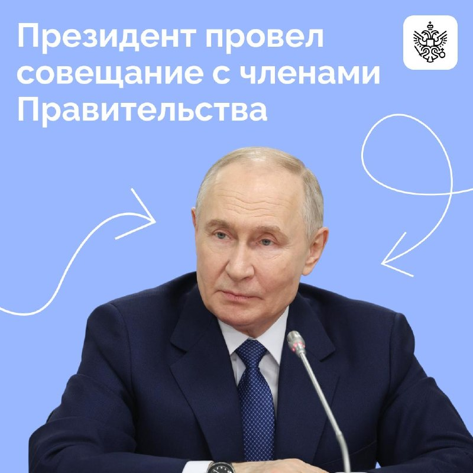
Отдав свои многочисленные голоса ЗА ЯКУШЕВА вы открыто заявили, что хотие улучшение жизни в своих провинциальных городах, сёлах и деревнях.…


Парламентарий подчеркивает: в случае принятия Городской Думой положительного решения, от представительного органа ожидается направление письма на имя Губернатора Ульяновской области.…

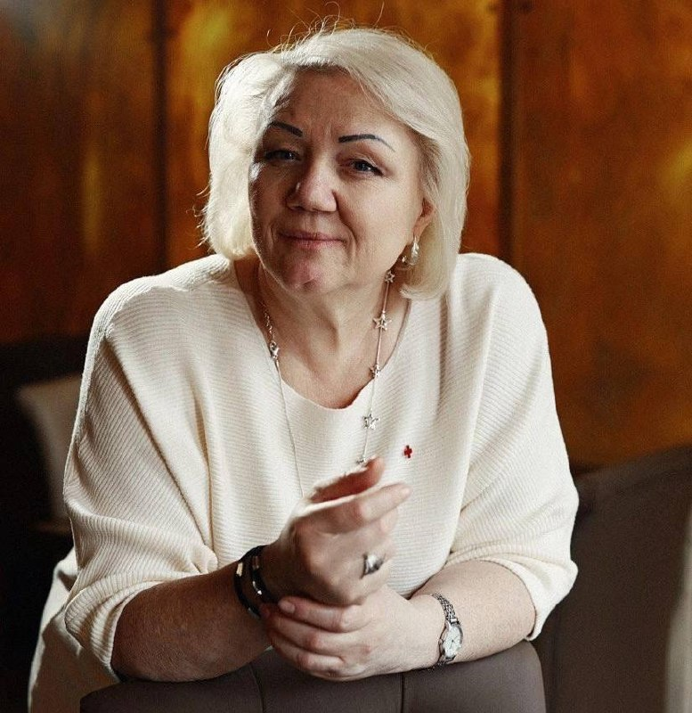
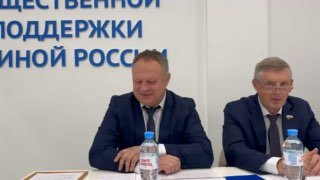
Я искренне благодарю всех, кто пришёл на избирательные участки и сделал свой выбор.…
Напомним, в июне Госдума дала регионам зеленый свет на запрет оборота вейпов с 1 марта 2027 по 1 марта 2032 года.…
Губернатор Алексей Русских передал очередную партию спецтехники ульяновскому именному гаубичному артиллерийскому дивизиону «Симбирск».…


л копченой паприки; — щепотка перца; — соль. В разогретую сковороду влить растительное и сливочное масло, затем яйца, постоянно помешивая.…
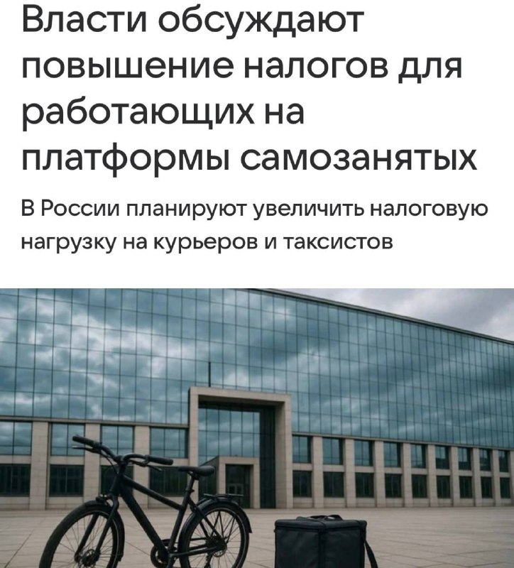
Утро началось с вручения диплома «Лучший работник производства» на главном конвейере.…
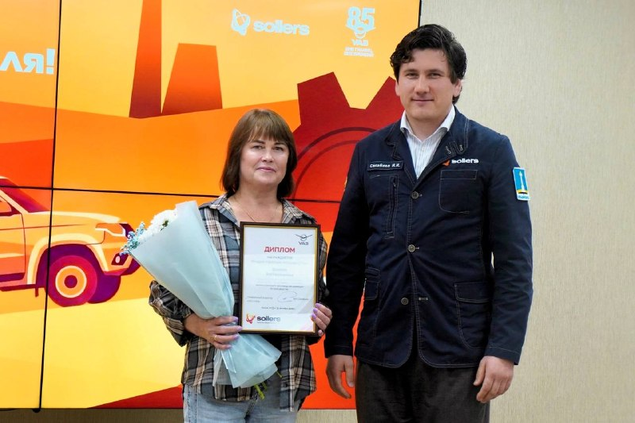
Посмотреть, что подойдёт вашему ребёнку Есть программы для детей от 3 до 17 лет: от первой робототехники и головоломок до искусственного интеллекта и промышленной робототехники на Python.…

Предположительно, подросток надышался газом. Точную причину смерти установит экспертиза.
Никаких новых сборов с населения нет — поправки в законе лишь позволяют бизнесу учитывать затраты на антидроновую защиту при расчёте налогов.…
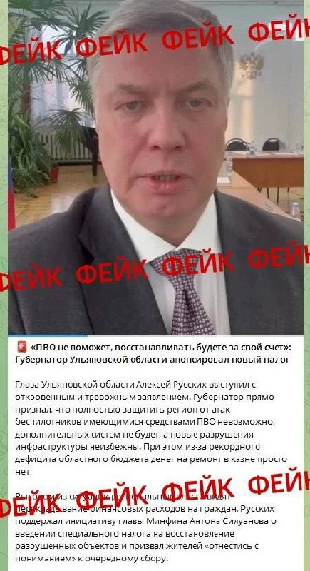
Эту функцию может взять на себя ЦЕНТР ОБРАТНОЙ СВЯЗИ (ЦОС) Без обратной связи мы находимся в темноте.…
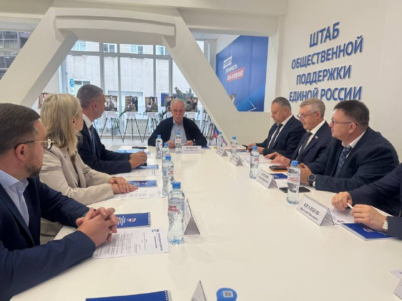
Еще 22% назвали сумму от 300 тыс. до 500 тыс. рублей, 20% - от 50 тыс. до 150 тыс., 11% - от 500 тыс. до 1 млн.…
Вернуть его можно после подтверждения личности, права владения и оплаты расходов.…
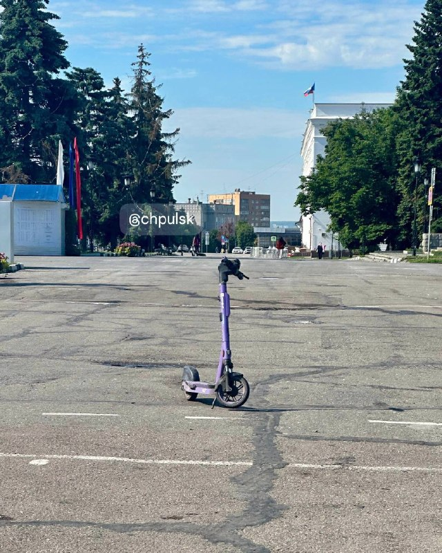
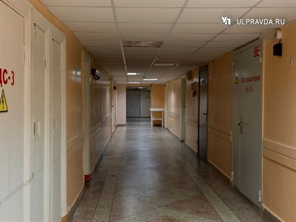
В новом филиале поликлиники № 4 начался прием пациентов ▶️ Семь образовательных учреждений отправляются на финал конкурса «Большая перемена» ▶️ К холодам готовы.……
Это волонтёры-медики, чьи добрые дела меняют суровую реальность.…
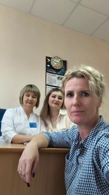
Препараты распределяют по медорганизациям, прививочная кампания стартует в ближайшие дни.…
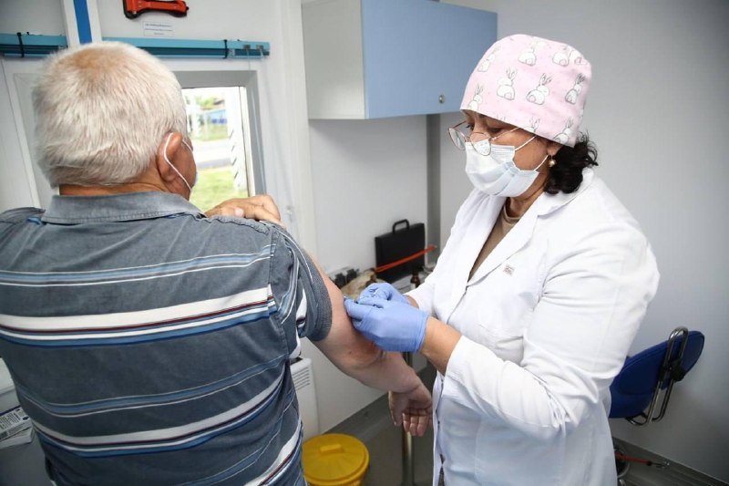
Подробности читайте в свежем выпуске авторского проекта ulpravda.ru «Вакансии в муниципальных образованиях Ульяновской области».…
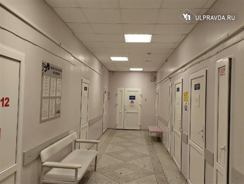
Врачи напоминают: инфекция может долгое время никак не проявлять себя, поэтому единственный способ узнать свой статус — регулярно проходить тестирование.…
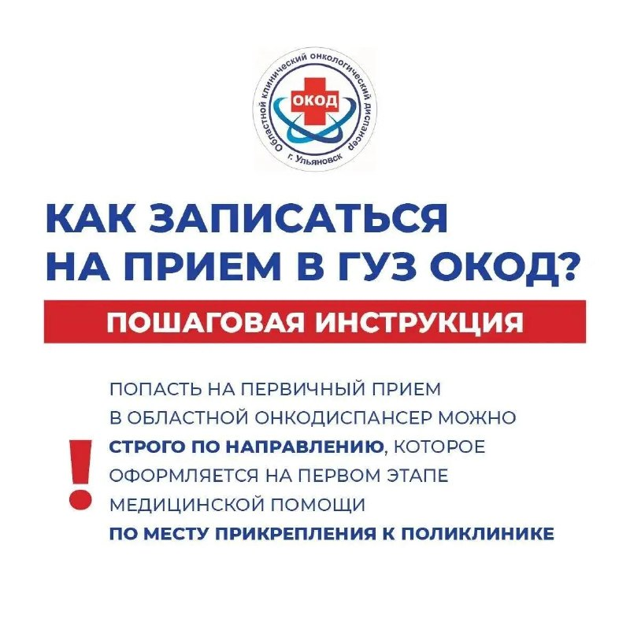
Местные жители смогут бесплатно сдать базовые анализы, провериться на онкологию, диабет, сердечно-сосудистые заболевания, а также пройти осмотр у гинеколога или уролога для оценки репродуктивного здоровья.…
Также врачи оценят репродуктивное здоровье: женщин от 18 до 49 лет примет гинеколог, мужчин от 18 до 39 лет осмотрит уролог.…
26 сентября с 9:00 во всех поликлиниках, врачебных амбулаториях и ФАПах Ульяновской области пройдет Единый день диспансеризации в рамках нацпроекта «Продолжительная и активная жизнь».…

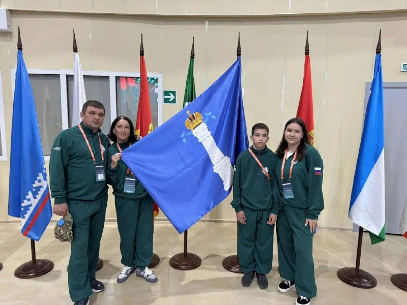
В финале участников ждут спортивные, интеллектуальные и творческие испытания. Ульяновскую область в финале представляет семья Герасимовых из Димитровграда и их наставник, ветеран СВО Денис Силантьев.…
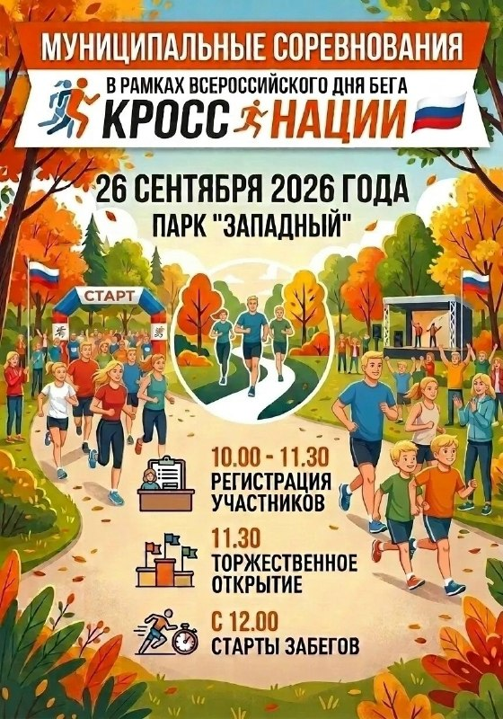
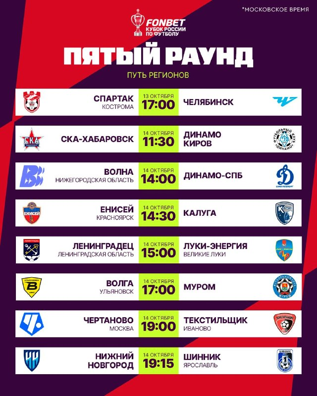
Вместо борьбы за выживание руководство ставит более высокие задачи. К ближайшему матчу в Нижнем Новгороде…

26 сентября с 9:00 до 14:00 у Дома быта на улице Гончарова, 23б будет работать передвижной флюорограф.…

На этом спортивном форуме Григорий Ишмаев представлял не только наш город, но и регион.…
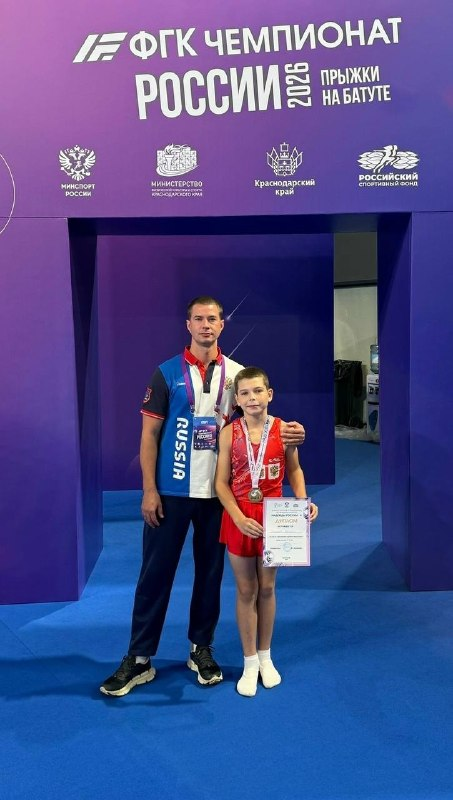
До конца этой недели в модельной специализированной библиотеке №17 «Содружество» проходит татарская этнонеделя «Мы вместе - Без бергә!».…
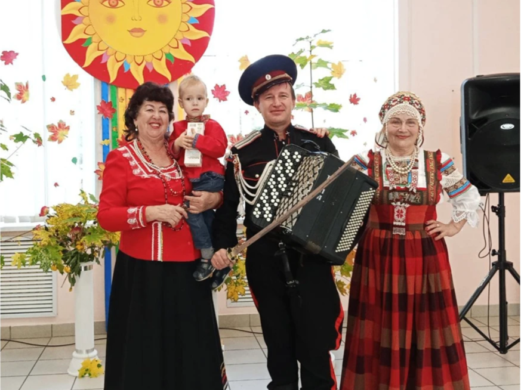
В микрорайоне в основном живут пенсионеры, и для них этот маршрут — единственная ниточка, связывающая с городом.…
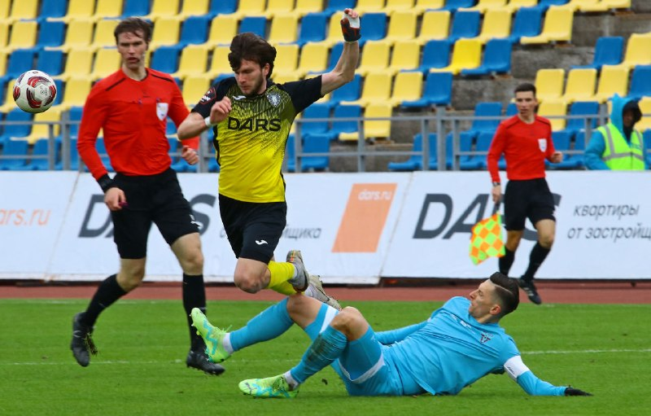
Когда, уже закончится этот безпредел, хочу работаю, хочу не работаю?…
Предоставление муниципальных услуг в сфере земельно-имущественных отношений традиционно считается одной из зон повышенного коррупционного риска.…
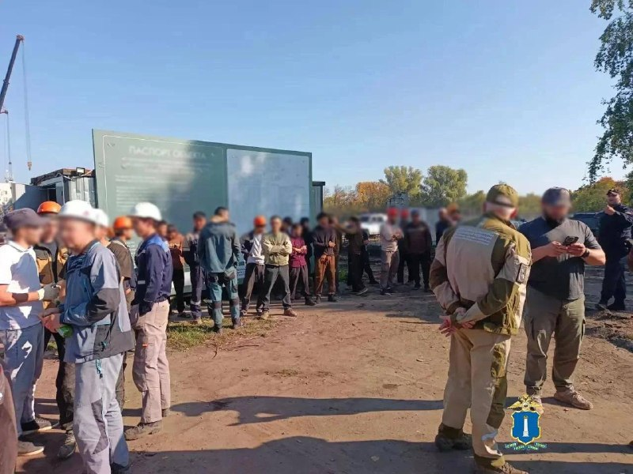
Житель Димитровграда нашёл в интернете объявление о продаже видеокарты, перешёл по ссылке и оплатил покупку.…

В Засвияжском районе Ульяновска сотрудники уголовного розыска задержали ранее судимую 38-летнюю безработную женщину по подозрению в краже денег с банковской карты 64-летней соседки.…

«В этот же день на улице Стасова в Засвияжском районе Ульяновска произошел пожар в трехкомнатной квартире в многоквартирном доме.…
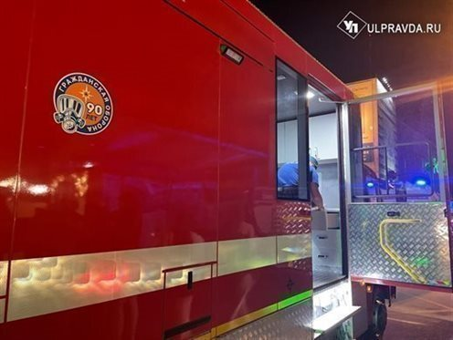
На самом деле видео настоящее, но его содержание подменили: губернатор говорил об итогах рабочей поездки в Карсунский район 18 марта.…

В селе Кадышево Карсунского района сотрудники уголовного розыска задержали местного жителя, хранившего незарегистрированное оружие.…


Сети укрывают технику, позиции и людей от вражеских дронов и наблюдения.…


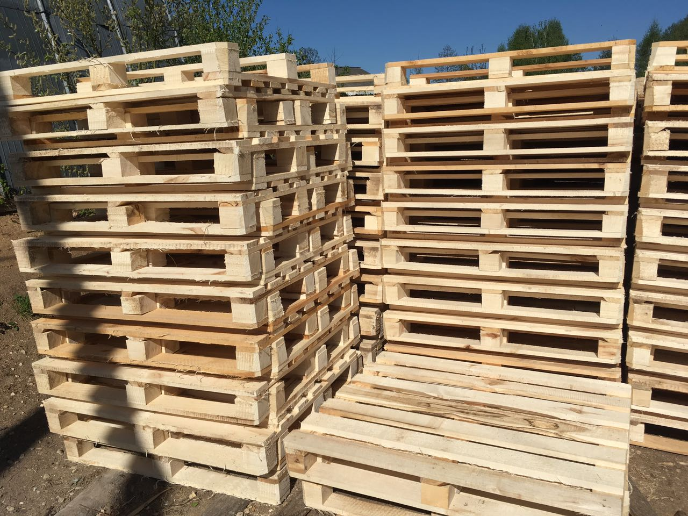
С начала года Россельхознадзор проконтролировал отгрузку из Ульяновской области почти 4700 деревянных поддонов в другие регионы страны. Карантинных организмов в продукции не выявлено — выдан 41 фитосанитарный сертификат.…
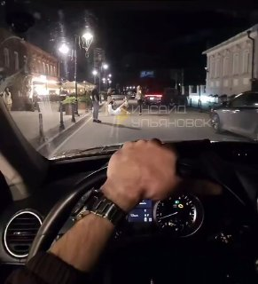
Так ответили 53% респондентов, ещё 21% потратили бы деньги на дачу, по 10% — на погашение кредита и лечение.

Некоторые настроены категорично: лишать центр Ульяновска магазина при наличии рядом учебных заведений, гостиниц и офисов — бесчеловечно.…

Но на этом не всё — теперь трясут и работодателей, которые могли приютить нелегалов. Проверки продолжаются.…


Призываем Россию сделать то же самое, — заявили в МИД Украины.…
Проверки затронут и физических, и юридических лиц — в том числе при внесении денег на счета и проведении валютных операций.…
🤩 Региональный этап конкурса «Ученик года — 2026» стартовал в детском оздоровительном центре «Юность» в Димитровграде. 💉 Первая партия вакцин от гриппа поступила в Ульяновскую область.…
Здесь каждый ребёнок должен соответствовать установленной норме, а ошибка становится поводом для наказания и замены.…

Изменения Минобрнауки предлагает ввести с 1 марта 2027 года.
Сюжет посвящен подвигу в годы Великой Отечественной войны. Как идёт работа над картиной — в материале ulpravda.ru.…
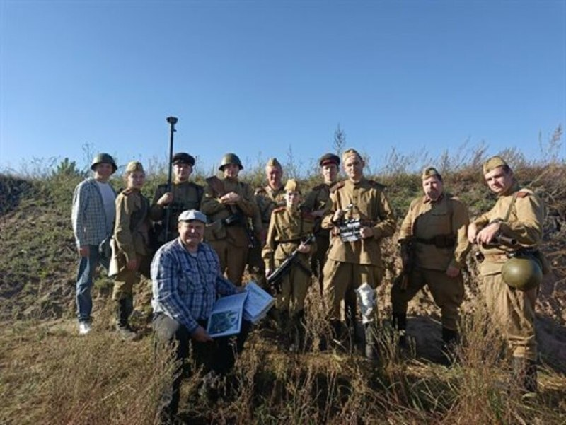
Здесь работает Елена Владимировна Мамонтова, которая почти 25 лет жизни отдала дошкольному образованию.…
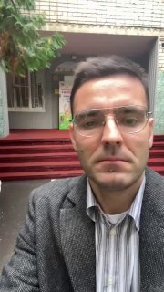
Историю сделают обязательной там, где раньше можно было выбрать обществознание, а математику — на всех специальностях по информационной безопасности.…
Победителям олимпиад льготу сохранят. Так решили после жалоб школьников.
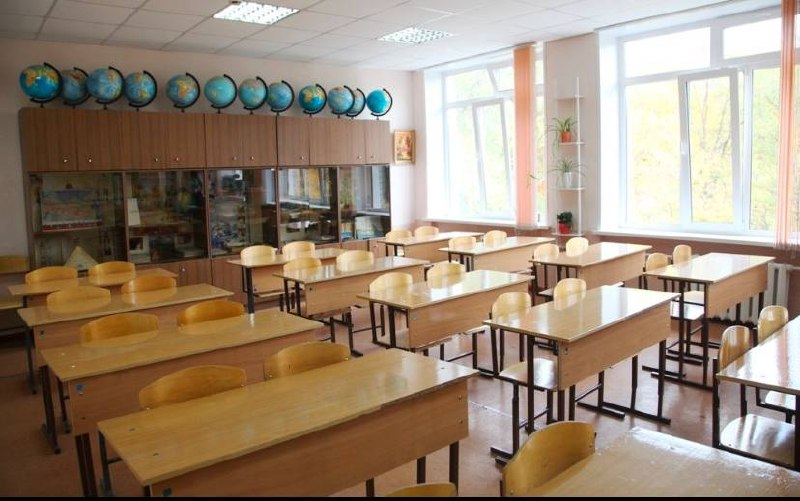
Такую возможность оставят только победителям — проект приказа Минобрнауки РФ.…
Параллельно педагогов ОБЗР и БЖД отправят на профессиональную переподготовку.…
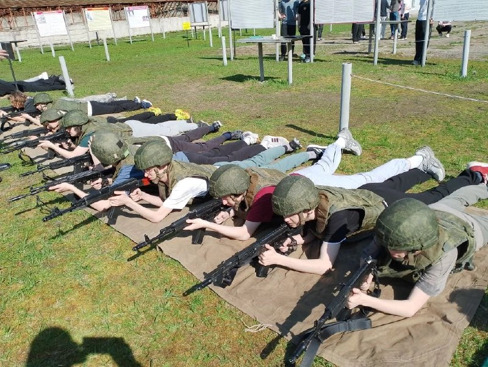
Программа посвящена юбилеям двух выдающихся композиторов-романтиков Ференца Листа и Антонина Дворжака. Все подробности в одном из ближайших выпусков «Реальности».…
И здесь есть чем гордиться: на сегодняшний день зарегистрировалось уже 26 команд из разных районов области .…
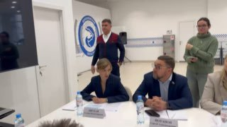
25 сентября, пятница 15:00 — экскурсия по дому-памятнику Гончарову; 16:00 — открытие осеннего сезона в «Квартале»; 18:00 — таперский кинопоказ шедевра Фрица Ланга «Метрополис» в киноклубе «Джармуш» на площадке УлГПУ.…
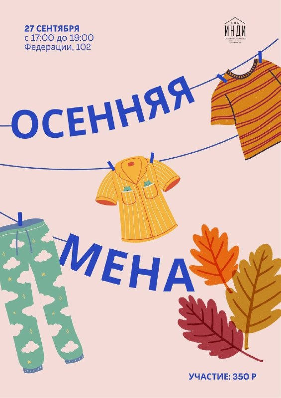
• подписаться на Telegram-канал НОНТОН ; • нажать кнопку «Участвовать» под постом.…
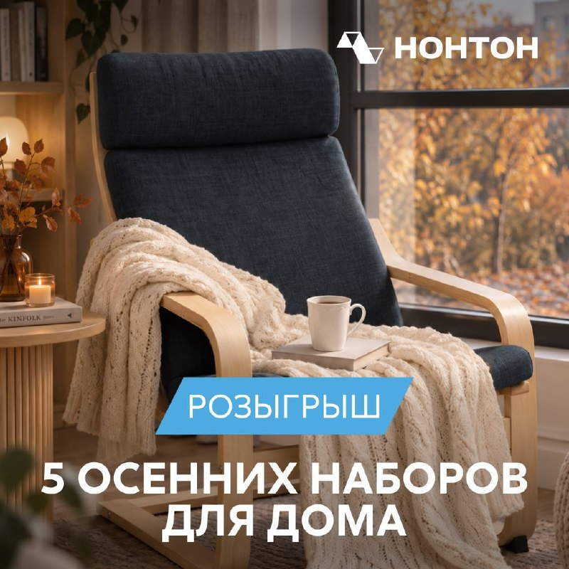
Поздние пристройки и тамбуры в предмет охраны не вошли.
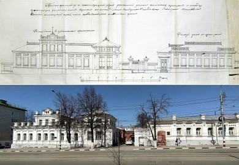
📅 Когда: до 27 сентября 📍 Где: МЦСИ (ул.…
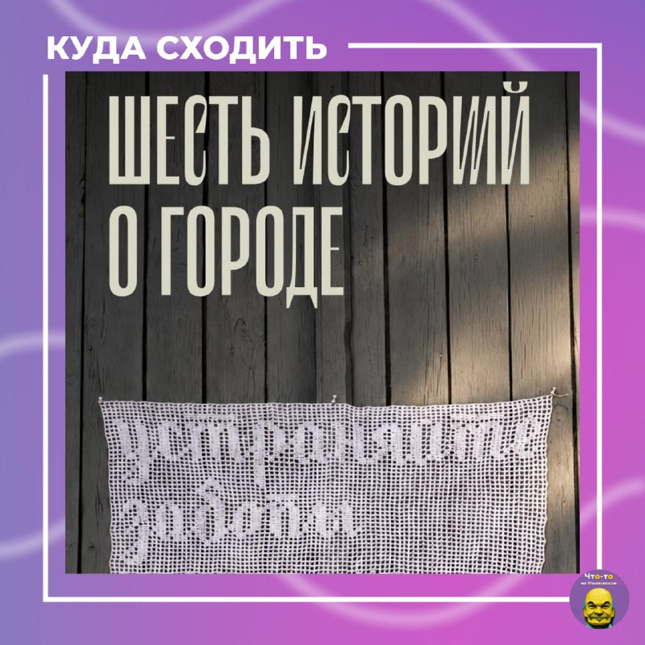
🦕 Кстати, в этом году в дневниках марафона участников будет ждать новый символ проекта – плиозавр Лусхан.…
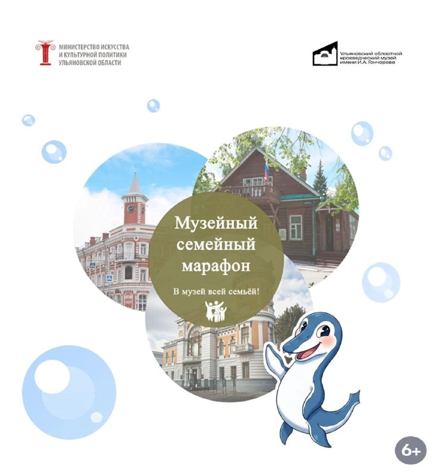
Почему «Чёрный квадрат» одни называют прорывом, а другие — насмешкой?…
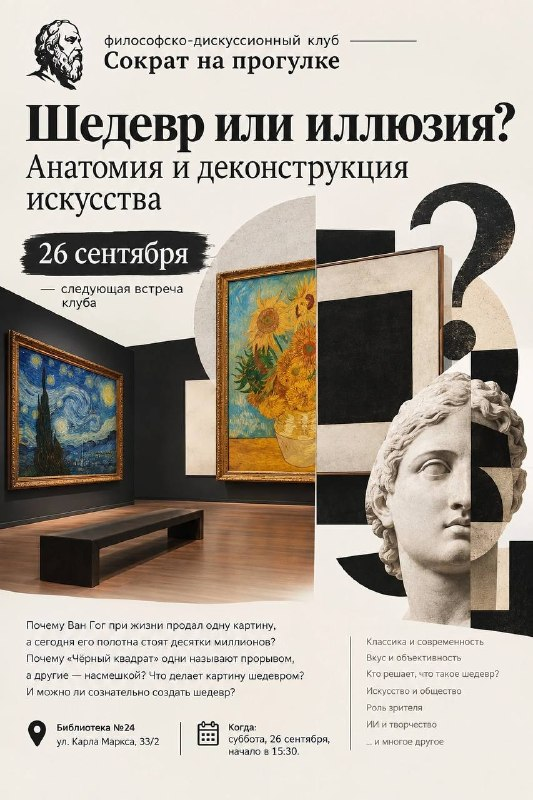
Экспозиция дополнена предметами старины и декоративно-прикладным искусством.…
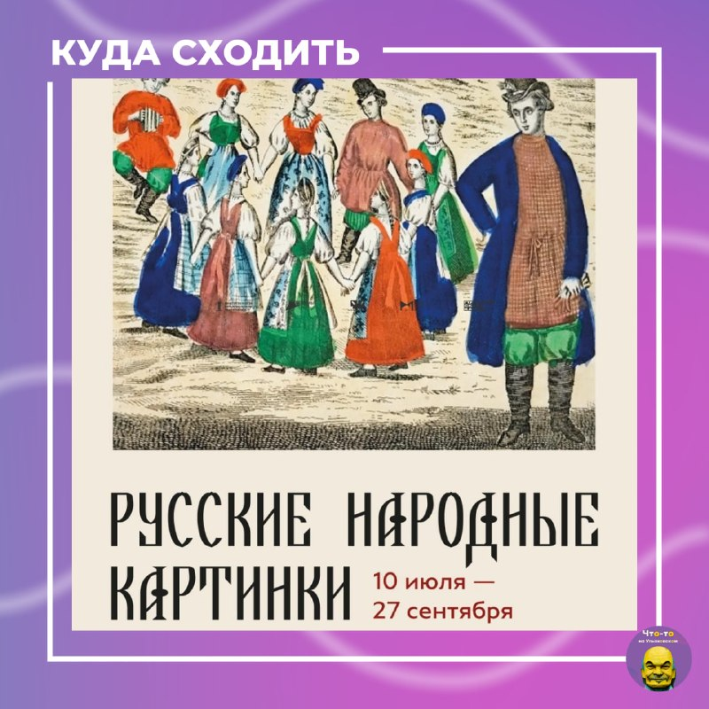
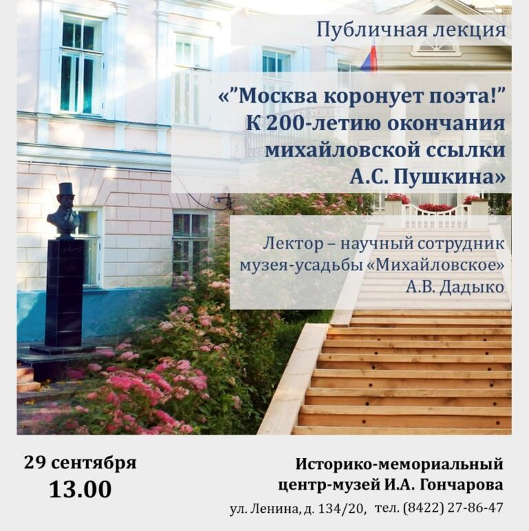
| Тема | Завтра | Ожидание | Уверенность |
|---|---|---|---|
| Выборы-2026 | ↓ спад | ~0.0 упоминаний | высокая |
| БПЛА и воздушные угрозы | ↑ рост | ~24.8 упоминаний | средняя |
| Спорт | ↑ рост | ~24.5 упоминаний | средняя |
| Школы и вузы | ↓ спад | ~10.1 упоминаний | средняя |
| Городская среда | ↓ спад | ~15.6 упоминаний | средняя |
| Губернатор / власть | ↓ спад | ~32.5 упоминаний | средняя |